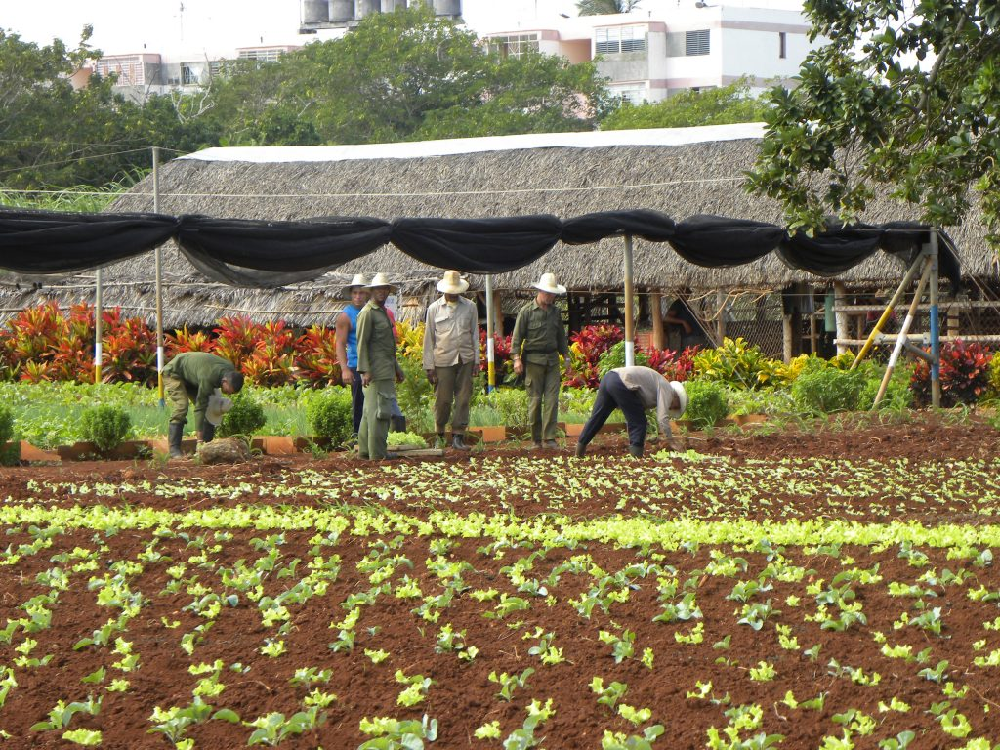
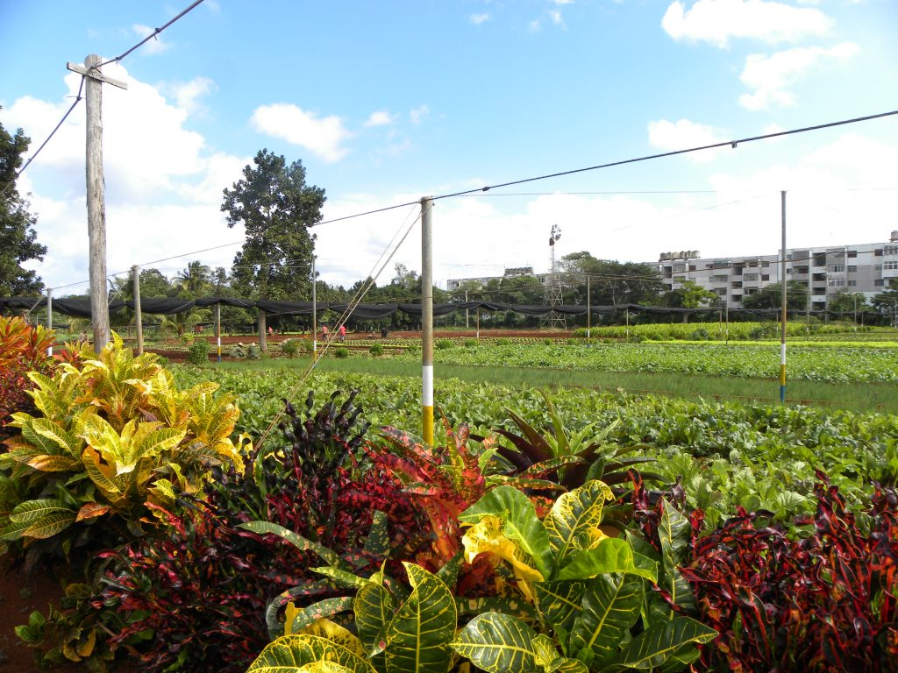

Slow Farms impacts awareness around consumption of indigenous foods
For nearly three decades, grassroots organisation Slow Foods has worked around the globe in over 160 countries to prevent the disappearance of local food cultures and traditions and counteract the rise of a fast life.
It strives to combat people’s dwindling interest in the food they eat; where it comes from; and how our food choices affect the world around us.
Slow Farms – a Slow Foods initiative, aims to revive, protect and strengthen traditional small and indigenous farms, as bastions of food security and sovereignty for the people of the Americas.
After success in the likes of Colombia and Cuba, the project is being extended into the Caribbean and other parts of Latin America to help the farmers, considered by many to be the backbone of the community – to flourish.
By Michelle Curran

Meet Néstor Mendieta, a Slow Food activist in Colombia and leader of the movement in Bucaramanga.
Agriculture is a challenging sector to be a part of in Colombia, Nestor says.
In rural areas, poverty is high as is illiteracy, and many producers say they have no machinery or farming infrastructure.
“The difficulties faced by farmers have led to the land surface area for permanent crops being increased, while temporary crops, such as maize, soya, potatoes, rice and vegetables, have not grown much,” Néstor says.
“As a result, Colombia imports 28 percent of the food it consumes.
“Clearly, the young workforce is abandoning the countryside, because they do not see future opportunities there.”
Although armed conflict has mostly ended in Colombia, during 2018 and 2019 more than 200 community leaders were murdered – remnants of violence remain, Néstor adds.
In a large proportion of cases, the murders appear to be associated with two phenomena.
Land restitution, which is part of the reparation process for the victims of armed conflict, is one of these phenomena; as are the actions by environmentalist leaders who try to prevent mining and energy production.
These activities present serious threats to the Colombian countryside.
La finca veleña se defiende de la minería (Vélez farms fight back against mining) is an initiative that originated in the municipality of Vélez.
It has emerged as an alternative to the threat of mining the region has been facing for more than five years.
The initiative is based on a model, agreed upon by farmers in Vélez, which sets out the necessary qualities for farms to be sustainable, both in environmental terms, and in economic and social terms.
“Finca Veleña project was the inspiration to promote agreements between farmers in several municipalities in the Magdalena Medio region, Néstor explains.
“However, it was clear threats like mining or the production of agrofuels (biofuel produced by agricultural means) are supported by very powerful economic forces.
“We need to confront them with a great social force that can counter powers clearly greater than those of local government.”
Partnering with various organisations, Néstor’s team has have been working for more than 15 years to strengthen small-scale farms in this region of Colombia.
“We eventually decided to promote the initiative, 10,000 sustainable farms for Latin America.
“This initiative evolved, and soon became about the need to safeguard traditional food systems – it involved farmers but also people living in cities who understood the need to protect small scale farms and to benefit everyone.”

In Colombia, farmers and social leaders promote the initiative in each municipality, bringing together its residents so they can create the sustainable farm model for their area and start promoting it with their own local resources.
“It is important to involve farmers and emphasise sustainability starts with establishing agreements at grass-roots level,” Néstor says.
In 2018, Néstor attended Slow Food’s Terra Madre 2018 to share about the initiative, and how it is benefiting Colombia.
“At the same time, our Slow Food Cuba colleagues were promoting their Slow Fincas initiative – a network of Slow Farms in order to support and promote small, diversified agroecological farming throughout the island.”
From the two proposals, the creation of a Slow Farms programme for Latin America and the Caribbean was given the green light.
Traditionally small-scale “peasant” farms have been the basis of food systems throughout the Americas, producing indigenous foods while using environmentally friendly practices.
“Peasant farms – or milpas, shagras, chacras or parcelas are the backbone of the security and food sovereignty of our countries.”
The main threat to farmers in the Caribbean, like Colombia, is land-grabbing, with the purpose of allocating it to mining, the production of agrofuels or extensive cattle ranching.
“The penetration of transgenic seeds and the prohibition of the circulation of native seeds also threaten traditional peasant production and compromise biodiversity and the sustainability of our food systems.
“In fact, in many countries, such as Colombia, environmental and social leaders who oppose these purposes are being systematically threatened and killed.”
So how can Slow Farms benefit farmers and the wider population of the Caribbean?
Néstor says the main objective of Slow Farms is to demonstrate and emphasise how vital peasant farms in Latin America and the Caribbean are for the food sustainability, in the region, and throughout the rest of the world.
It is hoped governments, social organisations and citizens recognise the value of the small farms, and how they contribute to the economy and the wellbeing of society.
Long term, Néstor expects people to realise this value, and communities to commit to strengthening small farms through government actions and investments.
The biodiversity production is the main characteristic of the peasant farm, and this improves the diversity of the food supply in each location, he adds.
“Slow Farms facilitates the recovery of seeds and traditional crops, many of them exclusive of each territory.”
Demand for traditional crops and indigenous foods needs to be high for these small farms to flourish.
To create this demand, Slow Farms requires an alliance with the gastronomic and catering sector, which promotes and favours the use of diverse and traditional foods, Néstor explains.
Fortunately, chefs and hotels throughout the Caribbean are seeing the benefit of using indigenous foods at their establishments.
More often than not, tourists around the world are beginning to want a more authentic experience when they visit a destination.

By eating and drinking food and beverages which are indigenous, local and fresh, tourists can share in a place’s culture; and by working together, farmers, hotels, chefs and other tourist operators can promote this gastronomical and cultural experience.
“When traditional or ancestral foods stop being consumed they also stop being commercialised and produced,” Néstor says.
“The standardisation of diets throughout the world reduces the variety of food and contributes to the development of monocultures with serious environmental consequences.”
However, if we move in the opposite direction, the recovery of traditional peasant farms and local diets are a fundamental strategy for food sustainability on our planet, he adds.
In countries where Slow Foods is active, chefs have the opportunity to be part of the Slow Food Chefs’ Alliance.
The Alliance project started in Italy in 2009, and has since spread to various countries including Cuba and Colombia.
As Slow Farms takes off in the Caribbean, it is anticipated local chefs there will take the opportunity to be part of the Alliance.
Participating Alliance chefs all have very diverse backgrounds and cooking styles, but they all share a commitment to protecting agricultural biodiversity and to safeguarding gastronomic knowledge and local cultures.
These chefs cook in a huge range of different kitchens: in restaurants, inns and B&Bs, or more informal places like markets and street food stands.
Slow Food Chef’s Alliance welcomes chefs with all kinds of cooking styles, whether ethnic, fusion or creative.
What is important is they always source quality ingredients (local, sustainable and seasonal); they can communicate the origin of their products; and they know the producers who supply them.
The Slow Food Chefs’ Alliance project cannot exist without quality ingredients.
Chefs must commit to using as many good, clean and fair foods as possible, products which could be linked to Slow Food projects (such as Slow Farms, the Presidia, the Ark of Taste, food communities or Earth Markets) or come from virtuous producers who respect the environment and animal welfare.
In particular, the chefs must include at least three Presidia products on their menus, prioritising local products and specifying on the menu the name of the producer, in order to highlight their work and give it visibility.
The Presidia and Ark products are marked with the project logos.
If the country has no Presidia, then there must be a recognised network of food communities or local producers with whom the chef regularly collaborates.
The Alliance chefs travel, meet with one another, participate in events and cook together.
When introducing the Slow Farms initiative to a new location, such as the Caribbean, Slow Farms has a protocol based on philosophical and operative principles, which allows people to identify with its cause.
It also has guidelines, around which people can develop the initiative in their territory.
Once these principles and guidelines are agreed upon, each country is free to implement the initiative how they see fit, while setting its own regulations and operating schemes.
Each country has a committee to communicate with the Slow Food advisors in Latin America and the Caribbean in order to facilitate the functioning of the network and the exchanges between the different locations, Néstor says.
There is hope governments will see the importance of Slow Farms; that Alliance chefs will start working with the small farm producers, to rejuvenate indigenous, local, sustainable foods.
The backbone of the community – farmers and producers – will be empowered, and traditional culture and ways of life will not be lost.
Visit Slow Foods for more information on the movement.